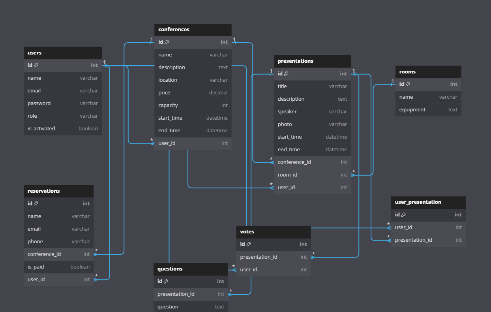

Konference
- Autoři
- Peter Gvozdják
xgvozd00@stud.fit.vutbr.cz -
popis činnosti v týmu
- Mário Perecz
xperec00@stud.fit.vutbr.cz -
popis činnosti v týmu
- Lukáš Selický
xselic00@stud.fit.vutbr.cz -
popis činnosti v týmu
- URL aplikace
- https://www.stud.fit.vutbr.cz/~xgvozd00/
- (pokud má aplikace více vstupních stránek, napište obdobně další URL)
Uživatelé systému pro testování
Uveďte prosím existující zástupce všech rolí uživatelů.
| Login | Heslo | Role |
|---|
| admin@example.com | password | Admin |
| speaker@example.com | password | Speaker |
| organizer@example.com | password | Organizer |
| guest1@example.com | password | Guest |
| guest2@example.com | password | Guest |
(Diagram případů užití není nutné vkládat, pokud IS implementuje role a případy užití definované zadáním.)
Video
Přiložte odkaz na komentované video demostrující použití informačního systému. Zaměřte se na případy užití definované zadáním (např. registrace uživatele, správa uživatelů a činnosti jednotlivých rolí). Video nahrajte například na VUT Google Drive, kde ho bude možné přímo spustit z odkazu.
Implementace
Stručná dokumentace k implementaci, která popisuje, které části projektu (např. PHP skripty) implementují jednotlivé případy použití.
- AdminController.php:Spravuje, pridáva, úpravuje, deaktivuje, aktivuje a maže používateľov.
- ConferenceController.php:Spravuje konferencie, zobrazuje zoznam konferencií, detailov konferencie, vytvorenia, úpravy a mazania konferencií.
- LoginController.php:Zobrazuje prihlasovací formulár a spracováva prihlásenie a odhlásenie používateľa.
- PresentationController.php:Spravuje, vytvára, úpravuje, maže a schvaľuje prezentácie, pridáva otázky k prezentácii, pridáva prezentácie do osobného/navštevníckeho/konferenčného rozvrhu, odstraňuje prezentácie z osobného/navštevníckeho/konferenčného rozvrhu, zobrazuje osobný/navštevnícky/konferenčný rozvrh a zobrazuje rebríček prezentácií.
- RegisterController.php:Zobrazuje registračný formulár a spracúva registráciu nového používateľa.
- ReservationController.php:Zobrazuje, spravuje, vytvára, potvrdzuje a ruší rezervácie.
- RoomController.php:Spravuje miestnosti a pridáva miestnosti ku konkrétnej konferencii.
- VoteController.php:Pridáva hlas pre najlepšiu prezentáciu a ruší ho.
Databáze

Instalace
Stručně popište:
Známé problémy
Zde popište, které body zadání nejsou implementovány a z jakého důvodu. Např. „Z časových důvodů nebyla implementována správa uživatelů.” Pomůžete tím zrychlit hodnocení, když neimplementované funkce nebudeme muset dlouze hledat.